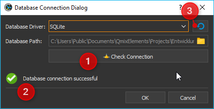
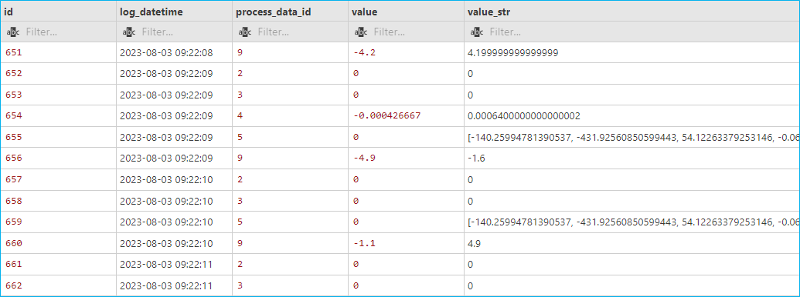

Datenbank Add-on
Das Datenbank-Add-on bietet Unterstützung für SQL-Datenbanken. Es ermöglicht Ihnen, Prozessdaten über den SQL Data Logger in einer SQL-Datenbank zu protokollieren und unterstützt Sie bei der Erstellung und Ausführung von SQL-Abfragen.
SQL-Datenbank-Logger
Der SQL-Datenbanklogger ermöglicht die Protokollierung von Prozessdaten in einer SQL-Datenbank. Der Logger ist nicht für die Aufzeichnung von Prozessdaten mit sehr hohen Abtastraten gedacht, sondern für die Aufzeichnung wichtiger Prozessdaten über einen längeren Zeitraum zur Dokumentation von Experimenten oder automatisierten Prozessen im Labor.
Important
Der SQL-Datenbanklogger unterstützt verschiedene Datenbanken wie SQLite, MySQL oder PostgreSQL. Er wurde mit SQLite- und MySQL-Datenbanken getestet.
Dialog zur Konfiguration des SQL-Loggers
Wenn das Datenbank Add-on geladen wurde, zeigt die Symbolleiste zwei zusätzliche Schaltflächen für die Konfiguration des SQL-Datenbankloggers ❶ und zum Starten/Stoppen der Datenaufzeichnung ❷.

Klicken Sie auf die Schaltfläche Configure SQL Logger, um den Konfigurationsdialog zu öffnen. Der folgende Konfigurationsdialog wird angezeigt:

Der Konfigurationsdialog enthält die folgenden Elemente:
Objektbaum (Object Tree) - Der Objektbaum enthält einen Baum aller Objekte und deren Eigenschaften, die in der Applikation vorhanden sind. Mit verschiedenen Filtern können Sie den Objektbaum nach bestimmten Objekten filtern. Standardmäßig werden nur Geräte und Geräteeigenschaften angezeigt.
Logger-Kanäle - hier sehen Sie in tabellarischer Form alle Kanäle die vom Logger aufgezeichnet werden.
Datenbankverbindung konfigurieren - ermöglicht es dem Benutzer, die Datenbankeinstellungen wie Datenbankserver und Port zu konfigurieren.
Der Objektbaum
Im Objektbaum finden Sie eine hierarchische Auflistung aller Objekte (z.B. Geräte) und deren Kindobjekte (wie z.B. untergeordnete Geräte):

Objekt - Ein Objekt kann z.B. ein Gerät (hier Nemesys_M_1) oder ein anderes Anwendungsobjekt sein. In jedem Objekt finden Sie nach dem Aufklappen in der nächsten Ebene die beiden Elemente Children und Properties.
Children - Das Children Element gruppiert alle Kindobjekte des übergeordneten Objektes. In unserem Beispiel sind dies alle Objekte, bzw. Geräte, die dem Gerät Nemesys_M_1 untergeordnet sind bzw. zu diesem Gerät gehören.
Properties - Das Properties Element gruppiert alle Eigenschaften des übergeordneten Objektes. In unserem Beispiel sind dies alle Eigenschaften des Gerätes Nemesys_M_1, welche im Logger aufgezeichnet werden können.
Untergeordnetes Objekt - In der Children Gruppe sind alle untergeordneten Objekte zu finden. Beim Beispiel Nemesys_M_1 sind dies z.B. die digitalen und analogen Ein- und Ausgänge des Gerätes, wie z.B. Nemesys_M_1_DigOUT1. Diese Objekte können wiederum aufgeklappt werden, um deren Kindobjekte und Eigenschaften anzuzeigen.
Eigenschaft - In der Properties Gruppe finden sie alle Eigenschaften des übergeordneten Objektes. Beim Beispiel Nemesys_M_1 sind dies z.B. die Eigenschaften SyringeFillLevel oder ActualFlow. Diese Eigenschaften können Sie einfach per Drag & Drop in die Kanalliste ziehen, um deren Werte aufzuzeichnen.
Objektbaum filtern
Über dem Objektbaum finden Sie verschiedene Filter, mit denen Sie den Objektbaum nach bestimmten Kriterien filtern können. Standardmäßig ist die Checkbox Devices Only ❶ aktiviert. D.h. im Objektbaum werden nur Geräte, die vom internen Gerätemanager (Core.DeviceManager) verwaltet werden angezeigt. Wenn Sie diese Checkbox deaktivieren, werden Ihnen im Objektbaum weitere Anwendungsobjekte angezeigt.
Ist die Checkbox Devices Only❶ aktiviert, wird Ihnen eine Auswahlbox ❷ angezeigt, mit der Sie den Gerätebaum nach einem bestimmten Gerätetyp filtern können. In der Abbildung unten wurde z.B. nach Spritzenpumpen gefiltert:
Zusätzlich finden Sie direkt über dem Objektbaum ein Eingabefeld ❸, mit dem Sie den Objektbaum nach einem bestimmten Begriff, z.B. einem Gerätenamen oder eine Geräteeigenschaft, filtern können. In der Abbildung unten wurde z.B. nach der Geräteeigenschaft ActualFlow gefiltert. D.h., es werden nur Objekte oder Geräte mit dieser Eigenschaft im Objektbaum angezeigt:

Liste der Logger-Kanäle
Die Kanalliste Logger Channels zeigt in tabellarischer Form die Konfiguration des Loggers.

Die Tabelle enthält die folgenden Spalten:
Object - enthält den Namen des Objektes, von dem der Wert einer bestimmten Eigenschaft (Property) aufgezeichnet werden soll und das Icon des Objekts.
Property - dies ist der Name der Objekteigenschaft / des Prozessdatenwertes, der aufgezeichnet wird. Den Typ der Eigenschaft (numerischer oder boolescher Wert) können Sie an dem Typ-Icon einfach erkennen.

Numerischer Wert

Boolescher Wert

Textwert

Datenarray

Datenstruktur

Object
Intervall (s) - das Messintervall in Sekunden für einen Kanal. Das minimale Intervall beträgt 1 Sekunde.
Label - hier können Sie eine eigene Bezeichnung des Kanals festlegen.
Datenbank-Einstellungen
Um die Datenbankeinstellungen zu konfigurieren, klicken Sie im Konfigurationsdialog auf die Schaltfläche Configure Database Connection.

Der Datenbank-Logger verwendet zunächst eine SQLite-Datenbank im aktuellen Projektordner für die Protokollierung. Die Standard-SQLite-Datenbankdatei befindet sich in:
C:/Users/Public/Documents/QmixElements/Projects/MyProject/Log/ProcessDataDbLog.sqlite
Mit den folgenden Schritten können Sie die Datenbankdatei leicht finden:
Wählen Sie im Hauptmenü der Anwendung den Menüpunkt
der Projektordner wird im Windows-Dateiexplorer geöffnet
Öffnen Sie nun den Ordner Log.
innerhalb des Ordners Log sollte die Datei
ProcessDataDbLog.sqlitezu finden sein
Wenn Sie die Datenbankkonfiguration zum ersten Mal öffnen, sollten Sie diese Standardkonfiguration sehen:
Sobald Sie auf die Schaltfläche Check Connection ❶ klicken, sollten Sie das grüne Häkchen ❷ sehen. Wenn Sie diese Standardeinstellungen wiederherstellen möchten, klicken Sie einfach auf die Schaltfläche Restore default settings ❸.
Wenn Sie mit einer SQLite Datenbank arbeiten, müssen Sie nur den Dateinamen der Datenbank auswählen. Wenn Sie einen anderen Datenbanktreiber verwenden, müssen Sie zusätzliche Datenbankeinstellungen vornehmen. Die folgende Abbildung zeigt die Konfigurationseinstellungen für eine MySQL-Datenbank:

Die folgenden Felder müssen ausgefüllt werden:
Database Driver: der Datenbanktreiber, der zu Ihrer Datenbank passt
Server Hostname oder IP: der Hostname oder die IP-Adresse des Servers, auf dem die Datenbank läuft. In diesem Beispiel läuft die MySQL-Datenbank lokal und wir verwenden localhost
Port: die Portnummer des Servers für die Verbindung zur Datenbank. In diesem Beispiel verwenden wir localhost als Hostname, daher ist der Port nicht von Bedeutung
Database Name: Name der Datenbank, die für die Datenprotokollierung verwendet werden soll
User Name: Datenbankbenutzer, der für den Datenbankzugriff verwendet werden soll
Password: Passwort für die Verbindung zur Datenbank
Sobald Sie alle Felder korrekt ausgefüllt haben, wird die Schaltfläche Check Connection aktiviert. Klicken Sie auf diese Schaltfläche, um Ihre Datenbankverbindung zu überprüfen. Wenn diese Prüfung erfolgreich war, können Sie auf OK klicken, um die Einstellungen zu übernehmen.
Wichtig
Die Schaltfläche Verbindung prüfen wird nur aktiviert, wenn Sie in allen erforderlichen Feldern Werte eingegeben haben. Die Schaltfläche OK wird aktiviert, sobald Sie Ihre Datenbankverbindung erfolgreich geprüft haben.
SQL Logger Configuration
Schritt 1 - Kanäle hinzufügen
Ziehen Sie aus dem Objektbaum Object Tree die Objekteigenschaft, welche Sie aufzeichnen möchten, per Drag & Drop in die Kanalliste Logger Channels. Der neue Kanal wird in der Zeile eingefügt, an der sie die Maustaste loslassen (siehe Abbildung unten).
Tipp
Um die Auswahl einer Objekteigenschaft (Property) zu erleichtern, können Sie den Objektbaum nach verschiedenen Kriterien filtern.
Schritt 2 - Konfigurieren des Aufzeichnungsintervalls
Sie können für jeden einzelnen Loggerkanal ein eignes Intervall zu Datenaufzeichnung einstellen. Das minimale Intervall beträgt 1 Sekunde. Um das Log-Intervall zu konfigurieren, klicken Sie doppelt in das entsprechende Feld in der Spalte Interval (s) und geben danach die Intervallzei (Sekunden) ein.

Wichtig
Wählen Sie ein Intervall, das so groß wie möglich und so klein wie nötig ist, um die Menge der aufzuzeichnenden und in der Datenbank zu speichernden Daten zu minimieren.
Schritt 3 - Kanalbezeichnung festlegen
In der Spalte Label können Sie die Bezeichnung für jeden Kanal anpassen. Sie können diese Spalte verwenden, um zusätzliche Informationen, einen aussagekräftigen Namen oder eine SI-Einheitenkennung hinzuzufügen.

Dazu doppelklicken Sie in die entsprechende Tabellenzelle innerhalb der Spalte Label und geben den Labeltext ein.
Wichtig
Wenn Sie eine neue Geräteeigenschaft auswählen, wird automatisch eine neue Kanalbezeichnung zugewiesen. Das heißt, Sie sollten die Kanalbezeichnung erst dann ändern, wenn Sie die richtige Geräteeigenschaft ausgewählt haben.
Die Objekteigenschaft und die Bezeichnung sind separate Spalten in der SQL-Tabelle.
Löschen von Kanälen
Markieren Sie die gewünschten Kanäle mit der Maus, um einen oder mehrere Kanäle aus der Liste zu löschen, und verwenden Sie dann entweder die Taste Entf oder den Eintrag im Kontextmenü der rechten Maustaste:


Um die gesamte Kanalliste zu löschen, verwenden Sie den Kontextmenüpunkt .
Datenbank-Schema
Der SQL-Logger verwendet zum Speichern seiner Daten das folgende Datenbankschema:

Das Schema besteht aus zwei Tabellen. Die erste Tabelle ist die
process_data für die Speicherung von Prozessdateninformationen.
Der folgende Code wird zur Erstellung dieser Tabelle verwendet:
CREATE TABLE IF NOT EXISTS `process_data` (
`id` INTEGER NOT NULL PRIMARY KEY AUTO_INCREMENT,
`name` varchar(64) NOT NULL,
`label` varchar(64)
);
In der Spalte name werden die Prozessdatenbezeichner gespeichert, die
aus dem Gerätenamen und der ausgewählten Eigenschaft gebildet werden. In der
Spalte label wird der Wert gespeichert, der in der Spalte Label der
Tabelle Logger Channels eingegeben wurde. Die folgende Abbildung
zeigt die eingegebenen Werte in der Tabelle Logger Channels:

Diese Konfiguration führt zu den folgenden Einträgen in der Tabelle
process_data (Screenshot VS-Code SQLTools):

Einträge werden niemals aus der Tabelle process_data entfernt. Wenn
ein Eintrag fehlt, wird er hinzugefügt. Wird die Bezeichnung eines Kanals in der
Tabelle Logger Channels geändert, kann dies zu einem neuen Eintrag
in der Tabelle process_data führen. Das folgende Beispielbild zeigt
dies:

Der analoge Eingang Nemesys_S_1_AnIN1 Property ActualValue
(Prozessdatenbezeichner Nemesys_S_1_AnIN1.ActualValue) wurde verwendet,
um verschiedene physikalische Größen in verschiedenen Experimenten zu erfassen:
die Temperatur einer Schüttlereinheit in °C
die Ozonkonzentration in %
und der Wert eines Durchflussmessers in ml/s
Dies zeigt, dass eine Änderung des Wertes Label zu unterschiedlichen
Datenbankeinträgen führt.
Die zweite Tabelle ist die data_log, in der die aktuellen Werte aus
den Geräteeigenschaften gespeichert werden. Diese Tabelle wird mit dem folgenden
SQL-Code erstellt:
CREATE TABLE `data_log` (
`id` INTEGER NOT NULL PRIMARY KEY AUTO_INCREMENT,
`log_datetime` DATETIME NOT NULL,
`process_data_id` int NOT NULL,
`value` double NULL,
`value_str` TEXT
FOREIGN KEY (process_data_id) REFERENCES `process_data` (`id`)
);
CREATE INDEX `idx_data_log_process_data_id` ON `data_log` (`process_data_id` ASC);
CREATE INDEX `idx_data_log_log_datetime` ON `data_log` (`log_datetime` ASC);
Der Code erstellt das folgende Tabellenlayout:
log_datetime: speichert das Datum und die Uhrzeit, zu der der Wert protokolliert wurde
process_data_id: ist ein Fremdschlüssel in der Tabelle
process_datazur Identifizierung der protokollierten Prozessdatenvalue: der tatsächlich protokollierte Wert, wenn es sich um einen numerischen oder boolschen Wert handelt
Numerischer Wert
Boolescher Wert
value_str: ein String des protokollierten Wertes - damit können auch nicht-numerische Werte wie z.B. Text, Datenarrays, Datenstrukturen oder beliebige andere Datentypen aufgezeichnet werden.
Datenarray
Datenstruktur
Object
Sie können die SQL-Abfragesprache verwenden, um die protokollierten Daten zu erhalten, die Sie benötigen. Die folgende Beispiel-SQL-Anweisung zeigt, wie alle protokollierten Werte aus den mit Flowmeter (ml/s) gekennzeichneten Prozessdaten abgerufen werden können:
SELECT b.log_datetime, a.name, a.label, b.value
FROM data_log AS b
INNER JOIN process_data as a ON (b.process_data_id=a.id)
WHERE a.label LIKE '%Flowmeter%'
Dies ist die Tabelle, die sich aus der angegebenen SQL-Anweisung ergibt:
Skript-Funktionen
Um die Datenprotokollierung zu automatisieren oder die Datenprotokollierung mit anderen Prozessen zu synchronisieren, kann der SQL-Datenbanklogger mit Skriptfunktionen gestartet und gestoppt werden. Die entsprechenden Funktionen sind in der Kategorie Logging in der Liste der verfügbaren Skriptfunktionen zu finden.
SQL Logger starten - Start SQL Logger

Diese Funktion dient dazu, den SQL-Logger mit den aktuell konfigurierten Einstellungen und Kanälen zu starten.
SQL-Logger beenden - Stop SQL Logger

Diese Funktion beendet das Logging in die SQL-Datenbank.
SQL-Datenprotokollierung triggern - Trigger SQL Data Logging

Diese Funktion löst die sofortige Aufzeichnung aller Kanäle des SQL-Loggers aus. Normalerweise werden die Daten mit dem konfigurierten Intervall aufgezeichnet. Wenn Sie die sofortige Protokollierung aller Kanäle erzwingen möchten, z.B. wenn Sie den aktuellen Zustand aller Kanäle erfassen möchten, wenn ein bestimmtes Ereignis eintritt, dann können Sie diese Funktion verwenden.
JavaScript-Datenbankzugriff
Das Datenbank Add-on bietet JavaScript Funktionen, um auf SQL-Datenbanken von
JavaScript aus zuzugreifen. Wenn Sie den Befehl
help() in der JavaScript-Konsole eingeben, sollten Sie die
Datenbankobjekte wie QSqlDatabase oder QSqlQuery sehen.
Beispiel 1 - SQLite-Datenbankabfrage
Der folgende Beispielcode zeigt, wie man die Datenbankobjekte in einer JavaScript-Funktion verwendet, um eine SQL-Abfrage für eine SQLite-Datenbank auszuführen:
function main() {
db = new QSqlDatabase();
db.createConnection("QSQLITE", "JsScript");
path = ScriptEnv.projectPath(ScriptEnv.LocationLog) + "/ProcessDataDbLog.sqlite";
db.setDatabaseName(path);
db.open();
q = db.createQuery();
result = q.exec("SELECT * FROM tbl_process_dat");
if (!result) {
throw new Error(q.lastError());
}
while (q.next()) {
print(q.recordValues());
}
}
Beispiel 2 - SQLite-Datenbankschema erstellen
Das folgende Beispiel zeigt, wie man das folgende Datenbankschema in einer SQLite-Datenbank mit Hilfe von JavaScript-Code erstellt:

function createSchema() {
db = new QSqlDatabase();
if (!db.createConnection("QSQLITE", "JsConsole")) {
throw new Error(db.lastError);
}
db.setDatabaseName("C:/temp/test3.sqlite");
if (!db.open()) {
throw new Error(db.lastError());
}
q = db.createQuery();
result = q.exec("CREATE TABLE IF NOT EXISTS substance ( " +
"id INTEGER NOT NULL PRIMARY KEY AUTOINCREMENT, " +
"name TEXT, " +
"description TEXT)");
if (!result) {
throw new Error(q.lastError());
}
result = q.exec("CREATE TABLE IF NOT EXISTS method (" +
"id INTEGER NOT NULL PRIMARY KEY AUTOINCREMENT, " +
"name TEXT)");
if (!result) {
throw new Error(q.lastError());
}
result = q.exec("CREATE TABLE IF NOT EXISTS experiment (" +
"id INTEGER NOT NULL PRIMARY KEY AUTOINCREMENT, " +
"substance_id INTEGER, " +
"method_id INTEGER, " +
"FOREIGN KEY (substance_id) REFERENCES substance (id), " +
"FOREIGN KEY (method_id) REFERENCES method (id))");
if (!result) {
throw new Error(q.lastError());
}
result = q.exec("CREATE TABLE IF NOT EXISTS experiment_log (" +
"id INTEGER NOT NULL PRIMARY KEY AUTOINCREMENT, " +
"log_datatime TIMESTAMP, " +
"event TEXT, " +
"experiment_id INTEGER, " +
"FOREIGN KEY (experiment_id) REFERENCES experiment (id))");
if (!result) {
throw new Error(q.lastError());
}
result = q.exec("CREATE TABLE IF NOT EXISTS ms_measurement (" +
"id INTEGER NOT NULL PRIMARY KEY AUTOINCREMENT, " +
"data_file_path TEXT, " +
"FOREIGN KEY (id) REFERENCES experiment_log (id))");
if (!result) {
throw new Error(q.lastError());
}
return "";
}
JavaScript-API-Referenz
QSqlDatabase
-
class CScriptQSqlDatabase : public QObject
Wrapper for QSQLDatabase object to use it in JavaScript.
The following code shows, how to open a database connection in JavaScript and how to execute a simple query
db = new QSqlDatabase(); db.createConnection("QSQLITE", "JsScript"); db.setDatabaseName("C:/Users/Public/Documents/QmixElements/Projects/Entwicklung/Log/ProcessDataDbLog.sqlite"); db.open(); q = db.executeQuery("SELECT * FROM tbl_process_data"); while (q.next()) { print(q.recordValues()); }
Public Functions
-
bool createConnection(const QString &type, const QString &connectionName)
-
QObject *createQuery(const QString &query = QString())
-
CScriptQSqlDatabase()
-
QString databaseName() const
-
QStringList drivers() const
-
QObject *executeQuery(const QString &query)
-
QStringList fields(const QString &tablename) const
-
QString hostName() const
-
bool isOpen() const
-
bool isValid() const
-
QString lastError() const
-
bool open()
-
QString password() const
-
int port() const
-
QSqlDatabase qSqlDatabase()
Returns the internal database object.
-
void setDatabaseName(const QString &name)
-
void setHostName(const QString &host)
-
void setPassword(const QString &password)
-
void setPort(int port)
-
bool setUrl(const QString &Url)
-
void setUserName(const QString &name)
-
QStringList tables() const
-
QString url() const
-
QString userName() const
-
virtual ~CScriptQSqlDatabase()
-
bool createConnection(const QString &type, const QString &connectionName)
QSqlQuery
-
class CScriptQSqlQuery : public QObject
Wrapper for QSqlQuery to use it in JavaScript.
There are several options how to execute a query. The first option is, to call the executeQuery() function of the database object:
q = db.executeQuery("SELECT * FROM tbl_process_data");
The second option is, to create the query via the database object and to execute it later:
q = db.createQuery("SELECT * FROM tbl_process_data"); q.exec();
or you create the query object and the pass the actual query to the executeQuery() function
q = db.createQuery(); q.exec("SELECT * FROM tbl_process_data");
If you want to insert data into the database, then you can build the complete query string with JavaScript or you can use the bindValues() function with placeholders like in the code below:
q = db.createQuery("INSERT INTO person (id, forename, surename) VALUES (?, ?, ?)"); q.bindValues([1001, "Bart", "Simpson"]); q.exec();
Public Functions
-
void bindValues(const QVariantList &Values)
-
CScriptQSqlQuery(const QSqlQuery &Query)
-
CScriptQSqlQuery()
-
bool exec(const QString &query = QString())
-
QString lastError() const
-
bool next()
-
bool prepare(const QString &query)
-
QVariantMap record() const
-
QVariantList recordValues() const
-
virtual ~CScriptQSqlQuery()
-
void bindValues(const QVariantList &Values)